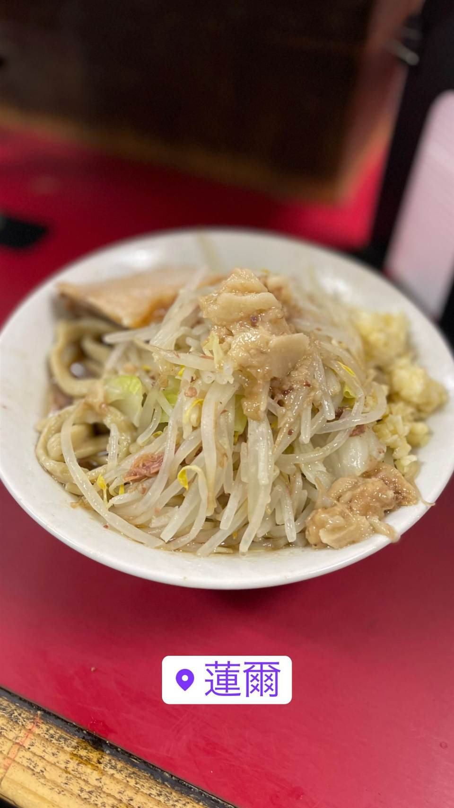
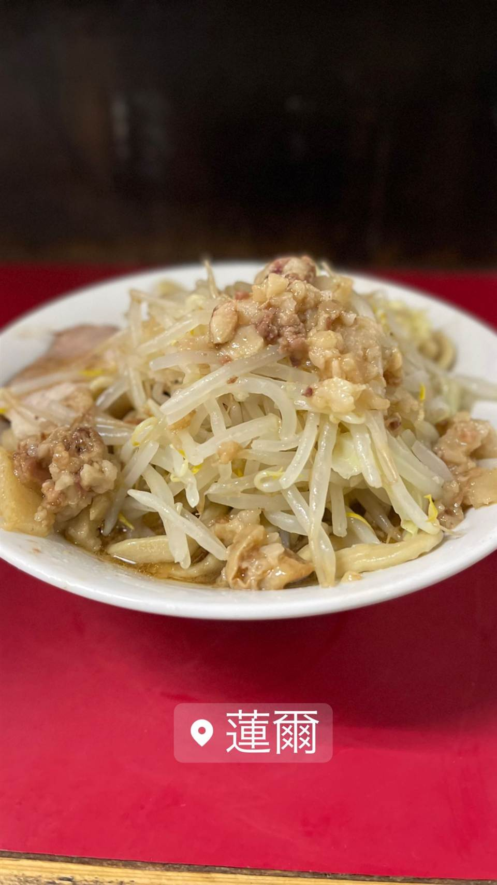

★ また行きたい二郎系(インスパイア)で20位
蓮爾 登戸店（はすみ）
大盛りはグラム自己申告、二郎町田店の血を引く極太麺
蓮爾
WHY GO
蓮爾 登戸店は、かつて存在した直系「ラーメン二郎町田店」の系譜を引く二郎系インスパイア店。低加水の極太麺と凶暴なスープが特徴で、大ラーメンはグラムを自己申告する独自ルールで知られる。


TRIVIA
豆知識
- ルーツは1999年開店の直系「ラーメン二郎町田店」
- 大盛りの量はグラム単位で自己申告する独自ルール
REVIEWS
世間の評判
90.6ラーメンDB3.60食べログ
唯一無二の極太麺とスープの甘み
- 非乳化で豚臭さがなく、甘みの感じられるスープが評価されている
- 他に類を見ないほど太い麺の強烈なインパクトが好評という声が多い
- 期間限定の麺や具材を求めて再訪するファンが多いと評価されている
ラーメンデータベース 口コミ551件・最新 2026-08
| 創業 | 2005年12月開業（登戸店） |
|---|---|
| 系譜 | 1999年開店の直系「ラーメン二郎町田店」の跡地で助手が「蓮爾」を開業→改名・閉店を経て、その蓮爾で働いていたスタッフが2005年12月に独立して開いたのが登戸店という、二郎町田店の血を引く系譜 |
| 看板 | 大ラーメン、二郎系つけ麺 |
| こだわり | 低加水の極太麺（武蔵野うどんに近い食感）、大盛りはグラム申告制の凶暴なスープ |
| どこから | 23区の外れ・近郊 |
| 行くなら | 行列 |
| 営業時間 | 月〜金 18:00-00:00 土 11:00-15:00、17:00-21:00 日 休み |
| 予算 | 昼 ～¥999 夜 ～¥999 |
| 定休日 | 日曜 |
| 予約 | 予約不可 |
| 場所 | 向ヶ丘遊園 神奈川県川崎市多摩区登戸1770 |
| メモ | 常に行列必至。大ラーメンは量をグラム単位で自己申告するシステム |
食べたもの：二郎系ラーメン / つけ麺 / 二郎系つけ麺 / 二郎系ラーメン
NEARBY
近い店・同じ系統の店
-
 ★
二郎系(インスパイア) 新小岩駅
Hi-Fat Noodle BUTCHER'S
「脂と肉を武器にする」がコンセプトの二郎系2号店
昼 ¥1,000～¥1,999 夜 ¥1,000～¥1,999
★
二郎系(インスパイア) 新小岩駅
Hi-Fat Noodle BUTCHER'S
「脂と肉を武器にする」がコンセプトの二郎系2号店
昼 ¥1,000～¥1,999 夜 ¥1,000～¥1,999
-
 ★
二郎系(インスパイア) 高田馬場駅(早稲田口)
ラーメン 池田屋 高田馬場店
京都一乗寺発の二郎系が東京初進出、豚の旨味濃厚な一杯
昼 ¥1,000～¥1,999 夜 ¥1,000～¥1,999
★
二郎系(インスパイア) 高田馬場駅(早稲田口)
ラーメン 池田屋 高田馬場店
京都一乗寺発の二郎系が東京初進出、豚の旨味濃厚な一杯
昼 ¥1,000～¥1,999 夜 ¥1,000～¥1,999
-
 ★
二郎系(インスパイア) 東北沢駅／駒場東大前駅
千里眼（センリガン）
夏季限定の冷やし中華も人気の二郎系インスパイア
昼 ～¥999 夜 ～¥999
★
二郎系(インスパイア) 東北沢駅／駒場東大前駅
千里眼（センリガン）
夏季限定の冷やし中華も人気の二郎系インスパイア
昼 ～¥999 夜 ～¥999
-
 ★
二郎系(インスパイア) 大山
自家製麺 No11
富士丸出身の店主が繰り出す350g極太麺の二郎系
夜 ¥1,000～¥1,999
★
二郎系(インスパイア) 大山
自家製麺 No11
富士丸出身の店主が繰り出す350g極太麺の二郎系
夜 ¥1,000～¥1,999
-
 ★
二郎系(インスパイア) 東大前
ラーメン用心棒 本号
千里眼の系譜を継ぐ、濃厚豚骨醤油と極太麺のまぜそば
昼 ～¥999 夜 ¥1,000～¥1,999
★
二郎系(インスパイア) 東大前
ラーメン用心棒 本号
千里眼の系譜を継ぐ、濃厚豚骨醤油と極太麺のまぜそば
昼 ～¥999 夜 ¥1,000～¥1,999
-
 ★
二郎系(インスパイア) 大井町
ザ・ラーメン スモールアックス
二郎系なのに麺量250gと少なめで食べやすい一杯
昼 ～¥999 夜 ～¥999
★
二郎系(インスパイア) 大井町
ザ・ラーメン スモールアックス
二郎系なのに麺量250gと少なめで食べやすい一杯
昼 ～¥999 夜 ～¥999